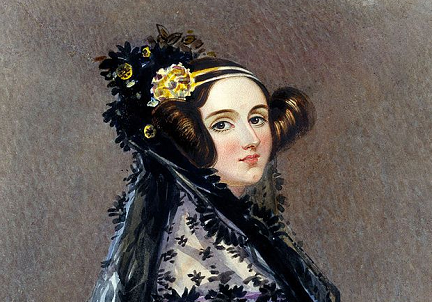
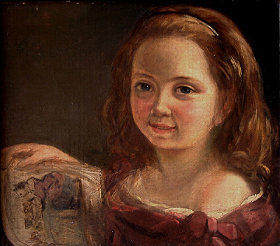
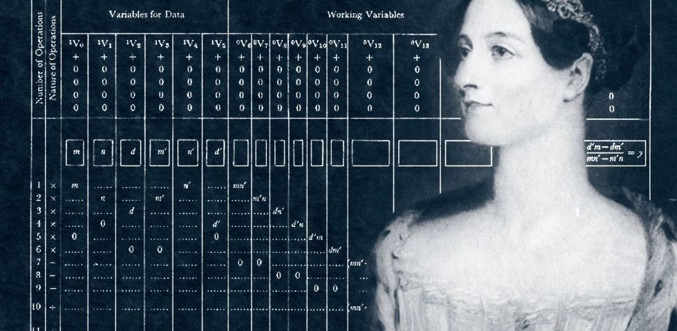

Augusta Ada King, condessa de Lovelace, nasceu em Londres em 1815, mais conhecida como Ada Lovelace, foi a primeira pessoa a escrever um algoritmo para ser processado por uma máquina na história da computação.
Seu pai era o poeta romântico Lord Byron, conhecido por seus exageros como ter um urso domesticado em seu quarto e por atos (incomuns para a época), como se relacionar com homens e mulheres. Sua mãe era a rica e culta Annabella Milbanke, apaixonada por matemática e pouco paciente com as maluquices do marido.
Lord Byron bebia demais o que resultou no divórcio quando Ada tinha só 5 semanas de vida. Annabella foi mãe solo preocupada em garantir que Ada não ficasse parecida com o pai. Investiu na educação rigorosa da menina contratando os melhores professores. Acreditava que, se a filha se interessasse por matemática e ciências, se afastaria da poesia e das tendências excêntricas herdadas do pai.
Ada era fascinada por matemática e poesia (para desespero de sua mãe). Aos doze anos, encantou-se pela engenharia mecânica e escreveu um livro chamado Flyology (ou Voologia), com desenhos de um plano para a construção de uma máquina de voar. Ao contar para sua mãe sobre a máquina, Annabelle achou que Ada estava se desviando dos estudos e a reprimiu. Então, pediu para que Ada focasse em se tornar uma dama.
Seu pai era o poeta romântico Lord Byron, conhecido por seus exageros como ter um urso domesticado em seu quarto e por atos (incomuns para a época), como se relacionar com homens e mulheres. Sua mãe era a rica e culta Annabella Milbanke, apaixonada por matemática e pouco paciente com as maluquices do marido.
Lord Byron bebia demais o que resultou no divórcio quando Ada tinha só 5 semanas de vida. Annabella foi mãe solo preocupada em garantir que Ada não ficasse parecida com o pai. Investiu na educação rigorosa da menina contratando os melhores professores. Acreditava que, se a filha se interessasse por matemática e ciências, se afastaria da poesia e das tendências excêntricas herdadas do pai.
Ada era fascinada por matemática e poesia (para desespero de sua mãe). Aos doze anos, encantou-se pela engenharia mecânica e escreveu um livro chamado Flyology (ou Voologia), com desenhos de um plano para a construção de uma máquina de voar. Ao contar para sua mãe sobre a máquina, Annabelle achou que Ada estava se desviando dos estudos e a reprimiu. Então, pediu para que Ada focasse em se tornar uma dama.
Aos 17 anos, Ada foi apresentada à corte e passou a ser convidada para festas na cidade. Seu jeito inteligente e rápida atraiu muitos solteiros, mas ela se interessou por um velho matemático chamado Charles Babage, que lhe contou sobre a invenção que trabalhava há anos, a “máquina diferencial”, que fazia grandes cálculos.
Charles gostou da jovem, ela era uma das poucas pessoas que se interessou e entendeu suas invenções. Quando Ada conheceu a máquina diferencial, viu nela muitas possibilidades que nem mesmo Charles havia pensado. O entusiasmo da jovem matemática o impressionava.
Charles era viúvo e lutava por investimentos para os seus projetos. Ada se casou e teve 3 filhos. Em 1830, isso significava que ela deveria abandonar os estudos e se dedicar aos filhos. Trocava cartas com Charles, acompanhava o trabalho dele de longe. Tinha pouco tempo para os próprios estudos. Passou a resolver problemas matemáticos à noite, após as crianças dormirem. Ela queria era trabalhar com Charles em suas máquinas incríveis.
Tempos depois, Charles criou o Engenho Analítico, melhor do que a máquina diferencial, pois seria capaz de analisar dados e guardar informações na memória. Algo tão revolucionário que poucas pessoas entenderam. Para divulgar sua nova máquina, precisaria publicar artigos em francês, língua que ele não sabia, mas Ada era fluente. Como ela entendia as criações de Charles, era a pessoa perfeita para traduzir esses artigos.
Enquanto Ada traduzia o conteúdo, fazia anotações por conta própria, imaginava inúmeras possibilidades que a máquina teria. Não tardou para que suas anotações ficassem maiores do que o próprio artigo.
Charles queria que a máquina resolvesse problemas matemáticos. Ada pensava em algo muito maior: os números poderiam representar coisas totalmente diferentes como letras e notas musicais. Escreveu instruções detalhadas com diagramas e tabelas explicando como o engenho analítico deveria processar uma equação matemática complicada. Assim, a máquina resolveria em segundos o que um humano levaria horas para solucionar. Os computadores ainda não existiam, mas Ada tinha acabado de criar o primeiro programa de computador. Ada não viveu para ver que suas ideias se transformariam nos computadores modernos que usamos hoje.
